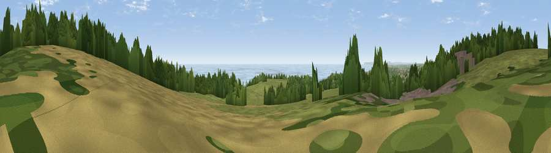

Viewpoint near Guestling Green
#4092 in England · top 5% of its area beats it · near Guestling GreenThe view, rendered

A 360° render of this exact spot computed from the terrain model, tree cover and land cover — summer colours, afternoon light, calibrated against photographs of famous viewpoints. Real trees, hedges and buildings will differ in detail.
The panorama
Grey silhouette: terrain skyline in each direction (720 bearings, Earth curvature and refraction included). Dashed green: skyline with trees (+15 m) and buildings (+8 m) as obstacles. Blue strip: how far the ground is visible on each bearing.
Where the view opens
Wedge length = distance to the farthest visible ground on that bearing (vegetation-aware). Rings at 10, 25 and 50 km.
What fills the view
40% water · 34% grassland · 16% woodland · 8% cropland · 1% built-up
Angular shares of the visible panorama (visual magnitude), not map area. Landscape diversity 0.57 (0–1 Shannon).
Key numbers
More beautiful places nearby
The staircase of upgrades: each row has a higher view potential than everything closer. Driving times are estimates from straight-line distance, calibrated against real road routing — check an actual route before setting out.
| Place | Direction | Drive | Score |
|---|---|---|---|
| Viewpoint near Fairlight | SE · 1 km | ~3 min | 76.7 |
| Viewpoint near Fairlight | ESE · 1 km | ~4 min | 79.0 |
| Viewpoint near Willingdon | WSW · 28 km | ~45 min | 81.5 |
| Viewpoint near Willingdon | WSW · 28 km | ~45 min | 83.4 |
| Wilmington Hill | WSW · 31 km | ~48 min | 85.4 |
| Viewpoint near Alciston | W · 36 km | ~55 min | 85.8 |
| Viewpoint near Alciston | W · 36 km | ~55 min | 86.8 |
| Firle Beacon | W · 36 km | ~55 min | 88.9 |
50.87328, 0.62316 · source: osm viewpoint · position refined by local search. Computed location — check access rights before visiting.